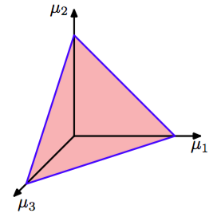
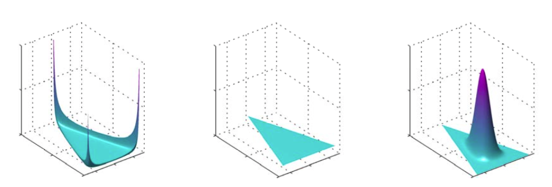

现在，我们介绍多项式分布参数的一组先验分布。观察多项式分布的公式，得到共轭先验：
其中，记作是分布的参数。注意，由于总和的限制，空间上的分布被限制在维的单纯形（simplex）中。图2.4展示了的情形。

图 2.4 三个变量上的狄利克雷分布被限制在一个单纯形中
概率的标准形式为：
这就是狄利克雷分布（Dirichlet distribution）。其中的是1.141中定义的gamma函数，
图2.5展示的不同的参数的单纯形上的狄利克雷分布。

图 2.5 三个变量上的狄利克雷分布的图像，其中两个水平轴是单纯形平面上的坐标轴，垂直轴对应于概率密度的值。分布对应。
公式（2.38）的先验乘以公式（2.34）的似然函数，得到参数的后验分布公式：
我们看到后验分布还是狄利克雷分布，这说明，狄利克雷分布确实是多项式分布的共轭先验。这让我们能够通过与公式（2.38）比较，确定标准化参数。得到：
其中。与二项分布的beta先验一样，可以把狄利克雷分布参数当成观测到的数量。
注意，两个状态的量既可以用公式（2.9）的二项分布表示为二元变量，也可以用的公式（2.34）的多项式分布表示为“1-of-2”变量。